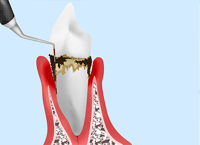
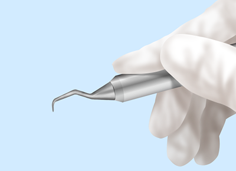
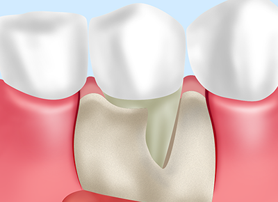
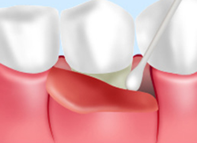
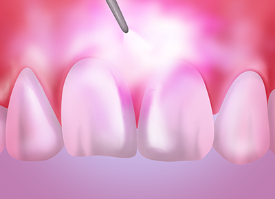
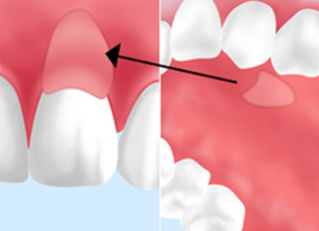
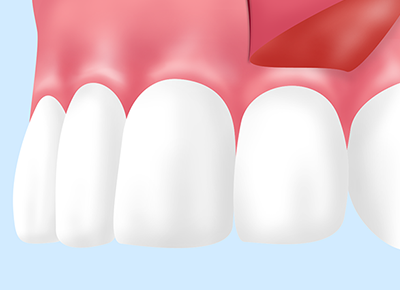
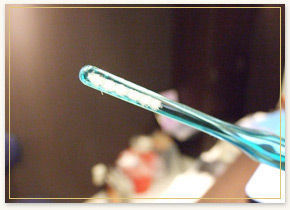

- ホーム
- 歯周病治療・歯周外科
吉川歯科医院の歯周病治療・歯周外科
大阪四ツ橋から徒歩2分のの吉川歯科医院では、歯周病治療に力を入れております。今や歯周病は日本人の80％が罹患しているともいわれており、国民病になっているといっても過言ではありません。当院では、歯周病の原因を明らかにして根本的な歯周病治療をおこなっております。歯ぐきが痩せ細っている場合には、歯周外科治療もおこないます。
日本人の国民病「歯周病」から歯を守りましょう
歯周病は抜歯の原因第一位の国民病です。日本人の80%もの人が歯周病によりダメージを受けているというデータもあります。歯周病は、痛みが出にくいため初期段階で病気に気付きにくいのが特徴です。そのため、症状が進行してから来院される患者様は多くいらっしゃいます。しかし、患者様の大切な歯を残すためには歯周病の早期発見・早期治療が大切です。
歯周病は細菌による感染症です。日常の正しいブラッシングと定期的な歯科検診で菌の繁殖を予防することができます。当院では、原因細菌の種類と数を位相差顕微鏡という特殊な顕微鏡で特定し、その結果に基づいてお出しする内服薬によって歯周病をコントロールしております。大切な歯を守るためにもご一緒に歯周病治療・予防を始めませんか。
歯周病の5つの原因
歯周病は歯ぐきに炎症が起きることで、出血や排膿が見られ最終的には歯が抜けてしまう病気です。初期症状はほとんど自覚を伴わないため、知らない間に重度まで進行していることも珍しくありません。日本人が歯を失う原因の一位となっている歯周病の原因には以下のものがあります。
| 歯周病菌 | 口腔内に存在している歯周病細菌が炎症を起こし、顎骨など歯周組織を破壊します。 |
|---|---|
| 食べカス | ブラッシング不足などで口腔内のケアが不十分だと、歯周病の原因細菌が食べカスをエネルギー源として増殖します。 |
| 詰め物・被せ物 | 歯に被せている詰め物や被せ物が歯に合っていない場合は、細菌が侵入して炎症を引き起こします。 |
| 乱れた歯並び | 歯並びが悪いとブラッシングが行き届かないところができてしまい、細菌が増殖しやすい環境ができてしまいます。 |
| 喫煙習慣 | 喫煙により、口腔内の免疫システムが低下することで歯周病にかかりやすくなってしまいます。また、喫煙すると血管収縮が起きるため、歯茎ぐきからの出血など症状が出ません。そのため、歯周病に気付きにくくなります。 |
歯周病治療の流れ
歯周病の治療では、最初に基本的な治療を行ってから歯周病治療を始めます。
- 【1】歯周基本治療
-
まずは進行の程度に関わらず「歯周基本治療」をおこないます。歯周病進行の原因である歯垢や歯石を取り除き、グラグラしている歯の咬み合わせを調整する治療です。
【具体的な2つの治療方法】
- 日常のご自宅でのブラッシングの際に、歯垢を取り除く「プラークコントロール」をおこなう。
- 歯科医院で歯石を取り除く「スケーリング」と、歯の表面を滑沢にする「ルートプレーニング」をおこなう。これにより歯に汚れが付着しにくくなります。
- 【2】咬み合わせの調整
- グラグラしている歯には過度な咬合力が加わらないように咬み合わせを調整します。
- 【３】定期検診
- 【4】歯周病治療スタート
歯周病の3つの検査方法
吉川歯科医院の歯周病治療では、ポケット診査やレントゲン検査、細菌検査をおこなっています。
ポケット診査

歯と歯ぐきの間にある歯周ポケット内へ「プローブ」という器具を挿入する検査方法です。歯周ポケットの深さを測定すると同時に、歯ぐきの炎症の有無を調べます。歯周ポケットは深ければ深いほど歯周病が進行していると判断されます。また、プローブを挿入した後に歯ぐきから出血があると、歯ぐきに炎症が起きていると判断されます。
-
レントゲン検査
- レントゲン検査では顎骨の骨密度の状態がわかります。骨密度が低い場合は、顎骨が歯周病菌によって吸収破壊されている状態であり、歯周病が進行していると判断されます。
-
細菌検査
- 口腔内の細菌を「位相差顕微鏡」という特殊な顕微鏡を使用して観察します。生物細胞を観察する場合に適している光学顕微鏡であり、スピロヘータなど歯周病の原因菌の形や数を詳しく調べることができます。当院では歯周病治療に応用しております。
吉川歯科医院の歯周病治療・歯周外科治療
-
SRP

歯に付着している歯垢や歯石を「スケーラー」と呼ばれる器具を使用して取り除きます。その後、歯周ポケット内に残っている汚れを「キュレット」という器具で取り除き口腔内をきれいに保ちます。比較的症状が軽度な場合におこないます。
-
リグロス（歯周組織再生療法）

歯周病により失われた顎骨に対する再生療法に「リグロス」というものがあります。2016年より保険適用となった日本生まれのお薬です、多くの患者様が治療を受けていらっしゃいます。歯ぐきの下に隠れている汚れを取り除く際、一緒に用いることで約1年で組織再生が期待できます。
-
フラップ手術

局所麻酔をした後に歯ぐきを切開する治療をフラップ手術といいます。歯ぐきを切開して、顎骨や歯根を露出し、そこに付着している歯垢や歯石を取り除きます。
-
レーザー

特殊なレーザーを歯ぐきに照射することで、歯周病細菌を殺菌して症状を改善する治療です。
痛みが少なく、歯ぐきのダメージを抑えられるのが特徴です。
-
CTG(結合組織移植片)

CTG（結合組織移植片）とは、歯周病が進行して痩せてしまった歯ぐきに対して結合組織を移植する治療です。歯ぐきを増加させることで歯周ポケットを浅くして、歯周病になりにくい歯茎を作ります。
-
FGG(遊離歯肉移植術)

上顎の裏側から硬い歯ぐきの組織を切除して、歯周病によって痩せてしまった歯ぐきへ移植する治療です。歯ぐきを増加させることで歯周ポケットを浅くして、歯周病になりにくい歯ぐきを作ります。
F-メソッド

歯周組織を常に清潔に保つことで、重度の歯周病でも歯を抜くことなく治療できる方法です。歯周病を放置すると歯周病菌が歯周組織を破壊し、最悪の場合は歯が抜け落ちてしまうことも。しかし、F-メソッドによって歯の再生を期待でき、歯周病菌を除去することができます。
{kind=link}
歯周病を放置してしまうと歯周病菌が歯周組織を破壊し、最悪の場合は歯が抜け落ちてしまうことがあります。そこで歯周組織を常に清潔に保つことで、重度の歯周病でも歯を抜くことなく治療できる方法がF-メソッドです。歯の再生が期待でき、歯周病菌を除去することができます。
従来の歯周病治療のように手術をするわけでも、内科的治療のように薬を飲むわけでもなく、｢重い歯周病に非外科的治療｣と、重度歯周病の患者様に対して、歯槽骨自らの再生する力を引き出す点というのがF-メソッドです。
料金表
| レーザー(1歯) | ¥100 |
|---|---|
| Fメソッドブラシ | ¥300 |
※表記価格は税別価格になります。